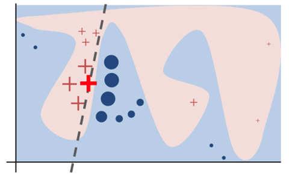
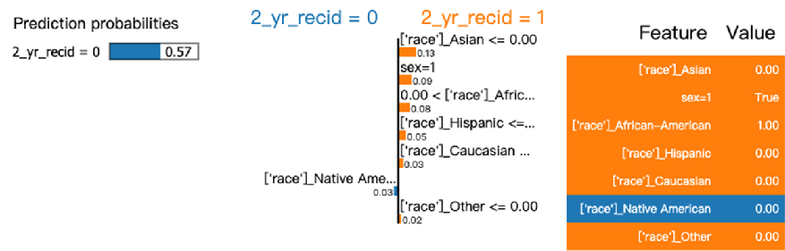
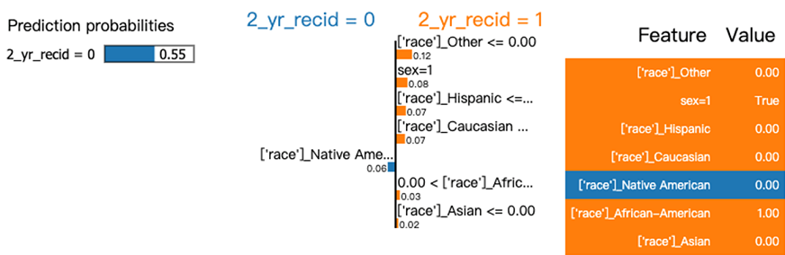

Introduction
Judges from many states use risk assessment scores as their reference during criminal sentencing. It is important for those risk assessment scores to be unbiased.
Our project idea is to examine biases in records, mitigate those biases and propose a fair recidivism prediction model. Then leverage the interpretation model LIME to show the decision of the NN model.
Problem Background
- It is increasingly common in courtrooms across the nation that use risk assessments. They are used to inform decisions about who can be set free at every stage of the criminal justice system, from assigning bond amounts. In Arizona, Colorado, Delaware, Kentucky, Louisiana, Oklahoma, Virginia, Washington, and Wisconsin, the results of such assessments are given to judges during criminal sentencing.
- Northpointe (now Equivant) is a company in justice industry that provide the tools and expertise to reduce risks. COMPAS (Correctional Offender Management Profiling for Alternative Sanctions) is their algorithm designed for judging if criminal defendants would recidivism in the future. Broward County primarily uses the score to determine whether to release or detain a defendant before his or her trial in the hope of addressing jail overcrowding. Here is a sample survey Northpointe used to calculate COMPAS scores
- ProPublica obtained two years’ worth of COMPAS scores from the Broward County Sheriff’s Office in Florida through a public records request. The data contains 11,757 people who were assessed at the pretrial stage.
- ProPublica’s analysis shows that there is racial bias in COMPAS predictions. However, the algorithm predicting recidivism is biased in favor of white defendants, and against black defendants.
- As fairness is getting more attention recent years, researchers develope metrics to quantify fairness in decisions and mitigate any bias and unfairness issues in ML. Figure 1 shows the number of papers, starting in 2010, that have been published in the fairness in ML domain. The figure shows that number of papers sharply increased starting in 2016 and 2017. Below is the figure 1 from FAIRNESS IN MACHINE LEARNING: A SURVEY.

Motivation
- There are always injustice cases in the world. If an unfair model trained by biased datasets plays a role in verdicts, there will be more injustice cases.
- The project goal is to mine the root causes of the biased dataset by digging into it with data mining techniques.
- Based on the insights from the analysis, we will try to mitigate those biases and propose a fair recidivism prediction model.
- Moreover, the deep model’s interpretability is bad → leverage the interpretation model LIME to show the decision of the NN model.
Related Work
- In the survey paper “Fairness in Machine Learning: A Survey,” the authors mention three fairness methodological approaches. Fairness approaches can be applied prior to modeling (pre-processing), during modeling (in-processing), or after modeling (post-process).

- The main idea of pre-processing is to modify the sample distributions sensitive attributes, remove discrimination from training data, and to train a model with the debiased dataset. Pre-processing is the most flexible part of the data pipeline and can be applied to any kind of following models.
- Oppositely, in-processing approaches are variant and sensitive against different kinds of models. As for post-processing, it’s more like an ad-hoc approach to make the model output fairer.
- Because our purpose is to use a naive model to show the skew distribution of a sensitive attribute that could make the trained model perform unfairly, we focus on pre-processing debiasing method in this project.
Exploratory Data Analysis
- The first figure shows defendants' age distributions for different sex. From the figure, we can see most defendants are in their 20s. And there are more male defendants than female defendants.
- The second figure shows feature correlations in a heatmap. There 0.27 correlation betwen priors count and 2-years-recidivism. There are little correlations between most features.
- The third figure shows the recidivism counts by race. We see most groups has similar distribution between people reoffended and those didn't. Only African-American has different distribution. This motivated us look into their feature interaction bias in the next section.
- The fourth figure is a point plot showing estimate of central tendency for 2-years-recidivism. We can see the rate for African-American is high at over 0.5 and has low uncertainty.
Observation: Feature Interaction Bias
- A unbiased sensitive attribute may contain biased when consider other non-sensitive attributes.
- The two evenly distributed races show biased when combining age spans.
Debias Experiment with FNN and Interpretation

- For the model interpretation, we use an explanation model called Local Interpretable Model-agnostic Explanations (LIME), to show the decision function of trained models against input features.
- For an instance X being explained, LIME samples instances around X, and weight them according to their proximity to X. Following, LIME learns a linear model that approximates the model, the linear model is shown as the dashed line in the figure above.
- To show the decision weight of models, we list top ten weights of input features.
As for the differences between the vallina model and the debiased model, the decision weight of sex of debiased model is slightly lower than the vallina. It shows under-sampling training data can mitigate the decision weight of target sensitive attribute.
Experiment Downsampling Data Based on Sex
Debias by Under Sampling (Protected Attribute: Sex) (Female, Male) |
| Model (F : M) |
Accuracy |
F1-score |
Demographic Parity |
| FNN (1:4) |
0.5925 |
0.5203 |
0.0537 |
| FNN (1:1) |
0.5835 |
0.5296 |
0.0470 |
FNN (1:4)

FNN (1:1)

Experiment Downsampling Data Based on Race
Debias by Under Sampling (Protected Attribute: Race) (African-American, Caucasian) |
| Model (A-A : C) |
Accuracy |
F1-score |
Demographic Parity |
| FNN (3:2) |
0.5935 |
0.5621 |
0.0917 |
| FNN (1:1) |
0.5750 |
0.4946 |
0.0693 |
Conclusion
- The COMPAS dataset doesn’t provide some crucial features, such as joblessness and poverty. (original dataset contains 137 features)
- Biases can be shown when consider non-sensitive attribute.
- We proposed a debiased FNN with an essential pre-processing debias method, under-sampling.
- The model interpretation results show under-sampling training data can mitigate the model decision bias against the target sensitive attribute.
- It is not necessarily a tradeoff between fairness and downstream task performance.
- As for future works, we can explore the impact of feature interaction bias and figure out how to mitigate it for training a more fair model.
- Aggregating and extracting more feature from the raw data is also a potential direction we can do for analyzing the data distributed bias of COMPAS.